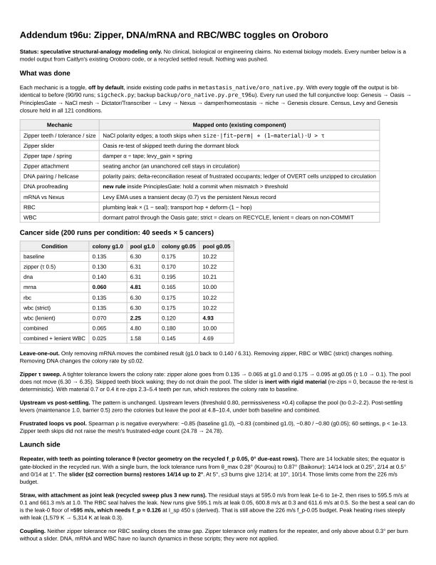
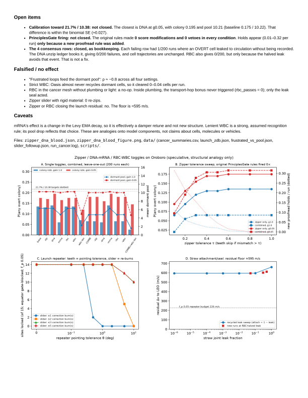

Speculative modeling exercise only. Structural analogies onto model components. No clinical, medical, biological, engineering, flight or operational claims.
Page-image view of the PDF. The connected GitHub interface stores text only, so the PDF binary stays on the project computer. Markdown source: ../../Zipper_DNA_Blood_Addendum.md.

